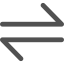
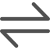

- 个人中心
- 我的博客
- 我的收藏
- 切换账号
-
音乐播放器 发布日期 : 2020-02-07通过学习此课程，可以掌握Python的语法规则、常见通用库的使用，并在老师的带领下做出自己的智能语音机器人。在积累了一定的语言基础上具备成为专业Python工程师的能力。并可以深入全面学习Python爬虫及Flask的通过学习此课程，可以掌握Python的语法规则、常见通用库的使用，并在老师的带领下做出自己的智能语音机器人。在积累了一定的语言基础上具备成为专业Python工程师的能力。并可以深入全面学习Python爬虫及Flask的 通过学习此课程，可以掌握Python的语法规则、常见通用库的使用，并在老师的带领下做出自己的智能语音机器人。在积累了一定的语言基础上具备成为专业Python工程师的能力。并可以深入全面学习Python爬虫及Flask的通过学习此课程，可以掌握Python的语法规则、常见通用库的使用，并在老师的带领下做出自己的智能语音机器人。在积累了一定的语言基础上具备成为专业Python工程师的能力。并可以深入全面学习Python爬虫及Flask的
- 1
- 55
- 33
- 55
- 阅读全文
-
通过学习此课程，可以掌握Python的语法规则、常见通用库的使用，并在老师的带领下做出自己的智能语音机器人。在积累了一定的语言基础上具备成为专业Python工程师的能力。并可以深入全面学习Python爬虫及Flask的通过学习此课程，可以掌握Python的语法规则、常见通用库的使用，并在老师的带领下做出自己的智能语音机器人。在积累了一定的语言基础上具备成为专业Python工程师的能力。并可以深入全面学习Python爬虫及Flask的 通过学习此课程，可以掌握Python的语法规则、常见通用库的使用，并在老师的带领下做出自己的智能语音机器人。在积累了一定的语言基础上具备成为专业Python工程师的能力。并可以深入全面学习Python爬虫及Flask的通过学习此课程，可以掌握Python的语法规则、常见通用库的使用，并在老师的带领下做出自己的智能语音机器人。在积累了一定的语言基础上具备成为专业Python工程师的能力。并可以深入全面学习Python爬虫及Flask的
 
